SN0DD
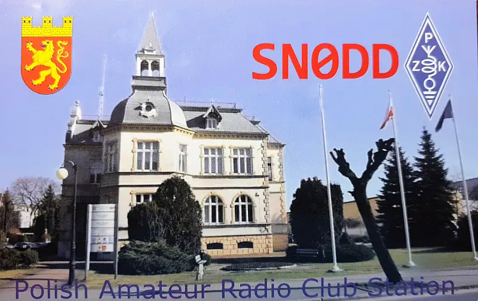
Dni Dębna i stacja okolicznościowa! Od 4 maja 2022 do 31 maja 2022 pracowała na falach eteru stacja
SN0DD z okazji obchodów Dni Dębna, które odbyły się 28 maja.
Dziękujemy za łączności.

Dni Dębna i stacja okolicznościowa! Od 4 maja 2022 do 31 maja 2022 pracowała na falach eteru stacja
SN0DD z okazji obchodów Dni Dębna, które odbyły się 28 maja.
Dziękujemy za łączności.
Co roku w okolicach maja staramy się aktywować stację krótkofalarską SN0MD. W roku 2011 by dodatkowo
uatrakcyjnić i zachęcić do pracy dodaliśmy do tego jeszczę akcję dyplomową. W roku 2014 połączyliśmy
stację i kartę QSO z „50 lat krótkofalarstwa w Dębnie".
Krótkie informacje:
Pierwszy bieg maratoński w Dębnie odbył się 22 lipca 1966 roku na 1000-lecie Państwa Polskiego. Nadano mu nazwę Mały Maraton „O Błękitną Wstęgę Granicy Pokoju”. Zorganizowano go na dystansie 21,5km, na trasie Cedynia-Siekierki. Jego pomysłodawcą i realizatorem był Henryk Witkowski. W 1969 roku po raz pierwszy rozegrany został na klasycznym dystansie 42,195km.
Był on jednocześnie Mistrzostwami Polski w tej dyscyplinie. Tym działaniem Dębno samo wyznaczyło sobie miejsce w historii polskiego sportu.
O renomie dębnowskiego maratonu świadczy fakt, iż został on ujęty w kalendarzu Międzynarodowej Federacji Lekkiej Atletyki i Europejskiego Stowarzyszenia LA. Już od 7 lat Maraton Dębno otrzymuje certyfikat jakości „Złoty Bieg”, co stanowi honorowe wyróżnienie świadczące o najwyższej jakości organizacji naszego biegu.
Więcej informacji o maratonie na oficjalnej stronie: maratondębno.pl
Poniżej karty QSL z wcześniejszych lat pracy:
 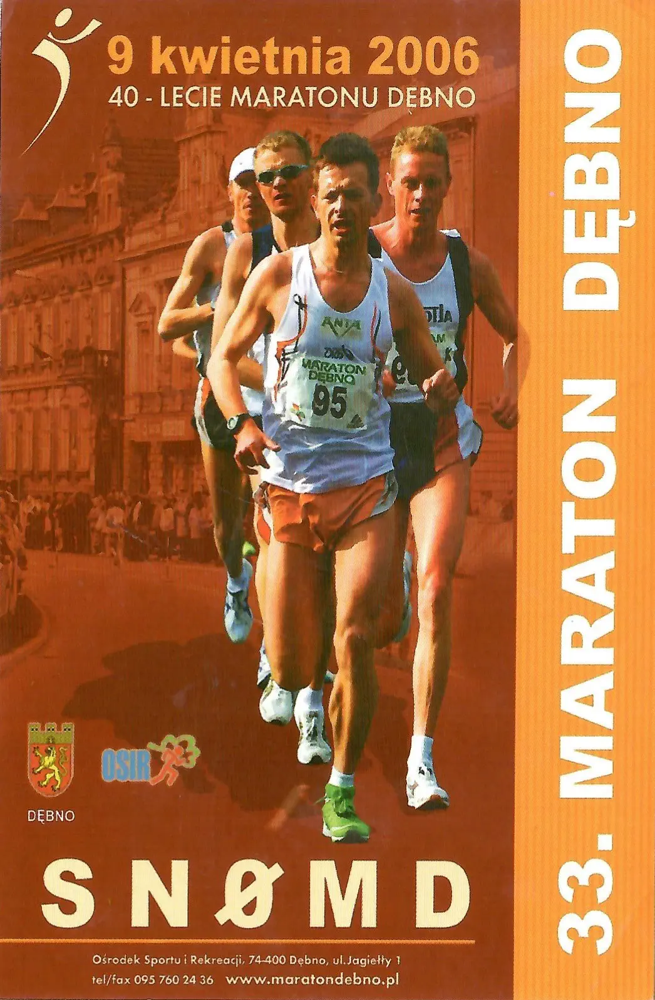
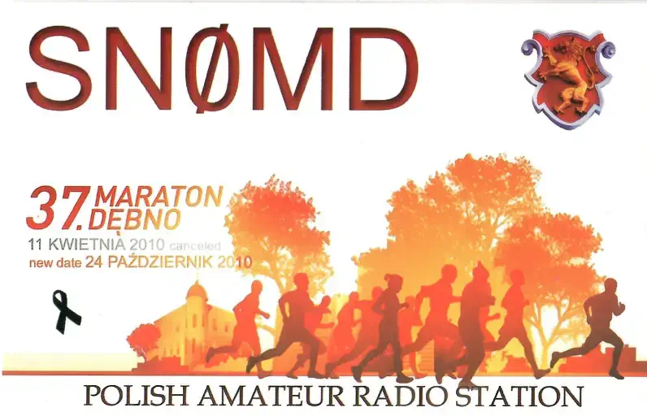
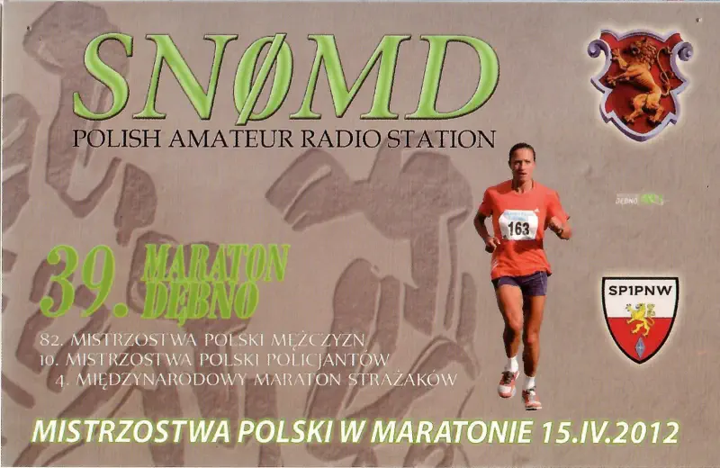
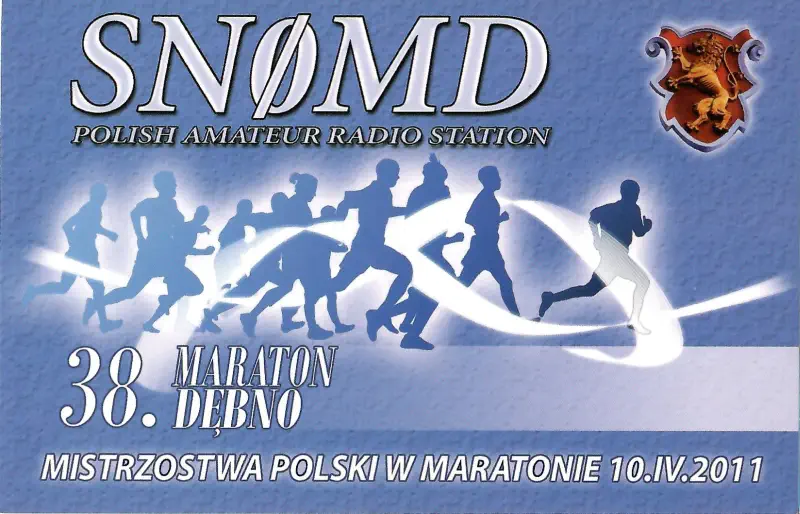
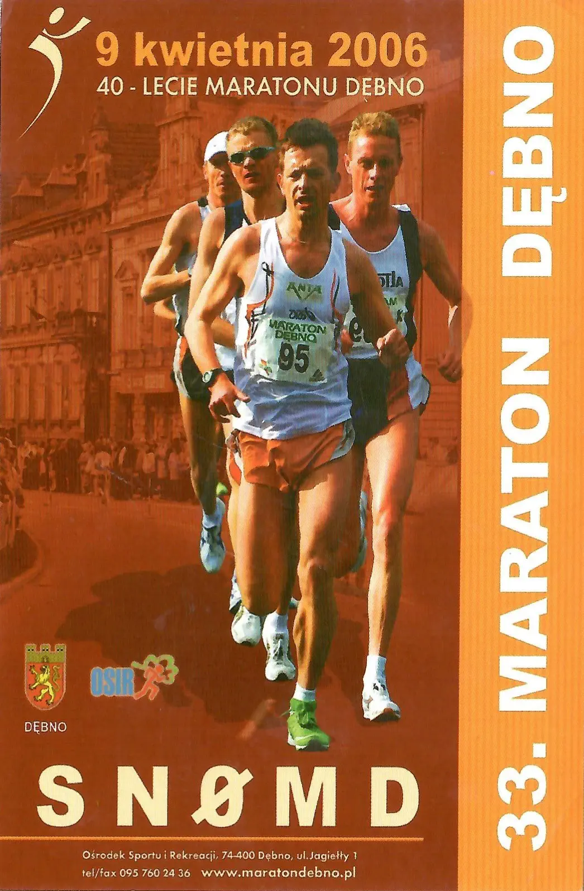
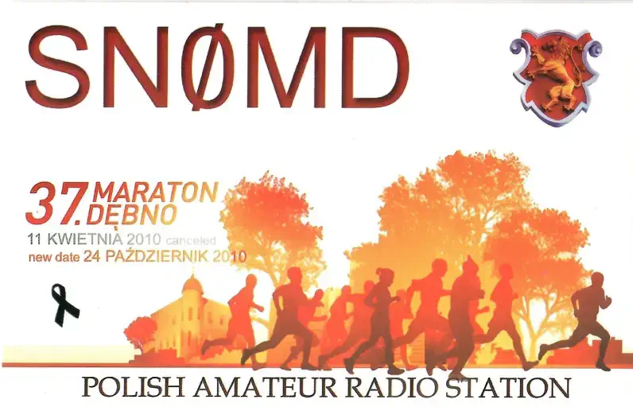
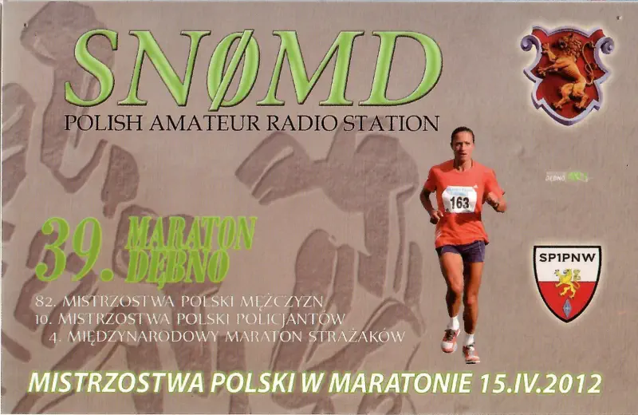
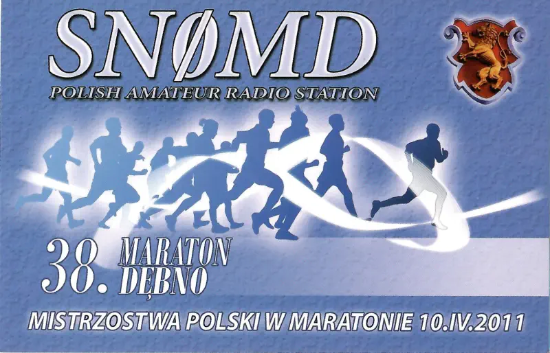
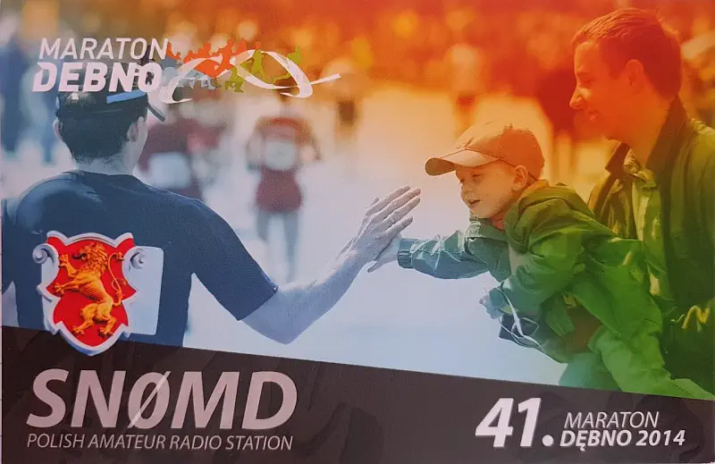
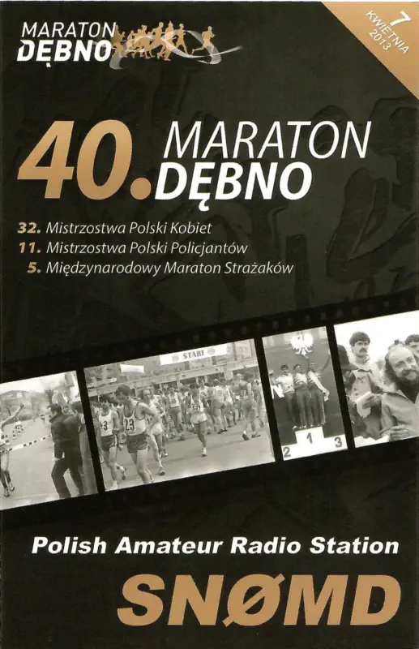
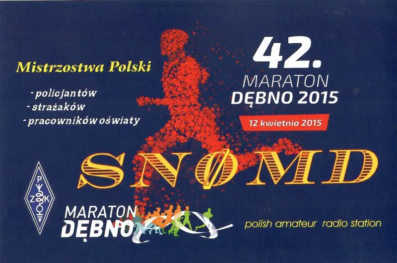
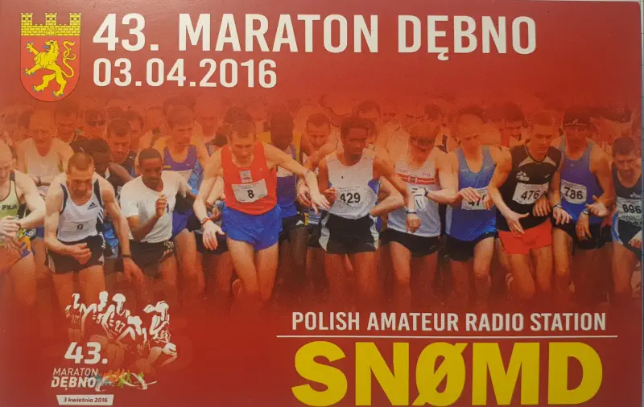
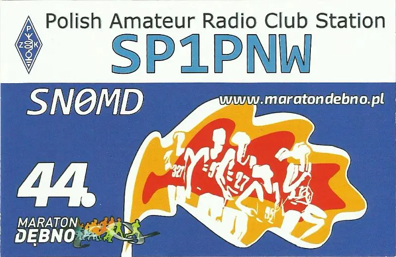
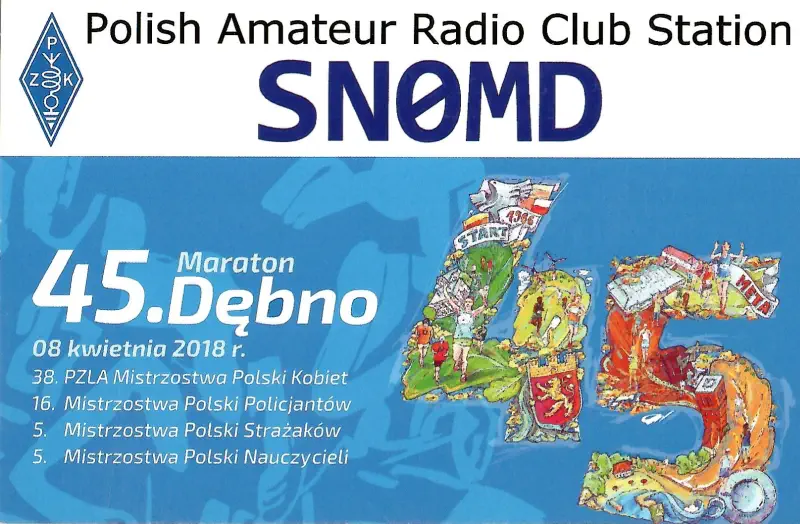
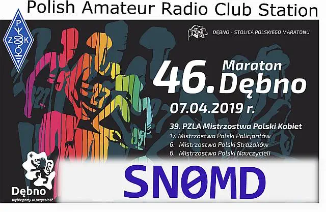
25 sierpnia 2018 roku od godziny 11:00 miało miejsce spotkanie sympatyków radia i łączności. Podczas
imprezy odbyła się również rekonstrukcja Bitwy pod Sarbinowem, a my krótkofalowcy ustawiliśmy stację
polową na fale krótkie i UKF i można było zobaczyć przykładowe łączności.
Wszystkich gości rejestrowała Emilia SQ3MSL. Jurek SP1FMW razem z prezesem OT14 Januszem SP1TMN
przywitał wszystkich zgromadzonych i oficjalnie rozpoczęło się spotkanie.
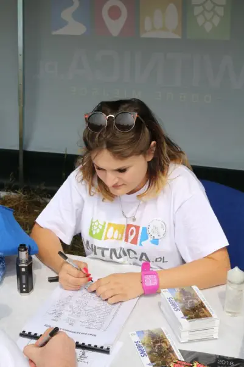
Przybyło wielu kolegów z okolic oraz odwiedzili nas ludzie mający pierwszy raz kontakt z radiem.
Podczas spotkania SQ3KNG uruchomił cross-band repeater (145.550 MHz/436.500 MHz), oraz uruchomiona
była stacja na KF. Można było ponadawać telegrafią lewą nogą. Daniel SP3DP z małżonką Patrycją
pilnował między innymi „kiełbasek" na grillu by pysznie się upiekły, a Dawid SP3DP dbał o dopięcie
szczegółów całej imprezy. Pozostali członkowie klubu aktywnie pomagali w zorganizowaniu spotkania i
dbali o bezpieczeństwo do końca.
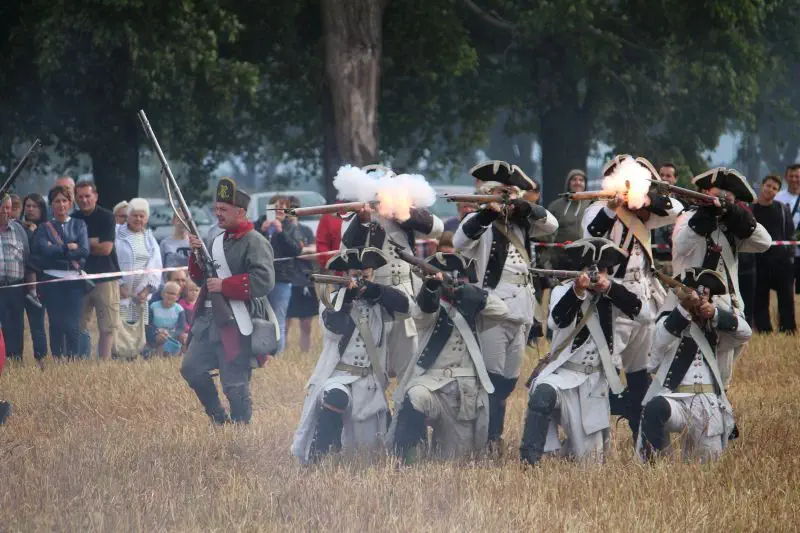
Bitwa pod Sarbinowem (niem. Zorndorf) – starcie zbrojne, które miało miejsce 25 sierpnia
1758, w czasie wojny siedmioletniej między wojskami pruskimi króla Fryderyka Wielkiego a wojskami
rosyjskimi generała Fermora, Anglika w służbie cesarzowej Elżbiety.
Przed bitwą
Fryderyk II miał zamiar zniszczyć wkraczające na Śląsk oddziały rosyjskie, które wcześniej
zniszczyły spustoszyły okolicę Kostrzyna, choć samego miasta nie udało im się zdobyć. Po
zgromadzeniu wojsk król pruski przekroczył Odrę na północ od Kostrzyna i odcinając jeden z
rosyjskich korpusów skierował się na główne siły wroga. Do spotkania obu armii doszło pod
Sarbinowem.
Siły Fryderyka składały się z 25 tys. piechoty (38 batalionów), ok. 10 tys. jazdy (83 szwadrony) i
193 dział, siły rosyjskie liczyły ogółem ok. 44 tys. żołnierzy, w tym ponad 36 tys. piechoty (55
batalionów), 6 200 jazdy (21 szwadronów) z czego połowę stanowili Kozacy i 240 dział. Poza tym
Rosjan wspomagali jeszcze Kałmucy, nie będący jednak formalnie żołnierzami, w sile ok. 1 800 ludzi.
Wojska rosyjskie zajęły w nocy z 23 na 24 sierpnia 1758 roku pozycje pomiędzy Chwarszczanami, a
Sarbinowem. Pozycje te wzmocnione były poprzez liczne naturalne wąwozy i potoki przecinające
okolice. Chcąc zaskoczyć przeciwnika i rozpocząć bitwę na lepszych pozycjach, wojska Fryderyka w
nocy z 24 na 25 sierpnia obeszły pozycje rosyjskie próbując wyjść na ich tyły. Manewr Fryderyka
został jednak przedwcześnie zauważony przez patrole kozackie i między 4 a 5 rano Fermor rozkazał
zmienić szyki swojego wojska o 180 stopni. Operacja ta spowodowała, że pierwsza linia rosyjska stała
się drugą, a prawe skrzydło lewym i odwrotnie. Flanki piechoty chronione były jednak przez strome
wąwozy, których dnem płynęły strumienie o bagnistych brzegach. Poza wąwozami stanęła jazda lewego i
prawego skrzydła oraz kozacy na skrzydle lewym.
Fryderyk Wielki tuż po 8 ustawił swoje wojska pomiędzy Krześnicą a Sarbinowem. Zdecydował się
atakować prawe, zachodnie skrzydło rosyjskie, oddzielone wąwozem od reszty szyku. W tym celu skupił
na swoim lewym skrzydle większe siły: 23 bataliony piechoty, prawie połową jazdy (36 szwadronów – 4
800 szabel) i większość artylerii, a na prawym 15 batalionów piechoty, 27 szwadronów jazdy i 57
dział. Na odwód składało się 20 szwadronów jazdy.
Bitwa
Ok. godz. 9 rozpoczął się dwugodzinny pojedynek artyleryjski obu wojsk, po którym do ataku ruszyła
pruska piechota. Kartacze rosyjskie wybiły krwawe szczerby w pruskich szykach. Piechota rosyjska
prawego skrzydła, której zaczęło brakować amunicji, z odległości 40 kroków przeszła do ataku na
bagnety. Prusacy zostali odrzuceni. W tym momencie do boju ruszyła jazda rosyjska prawego skrzydła.
Awangarda pruskich piechurów załamała się i uciekła w panice do Sarbinowa i Krześnicy, goniona przez
Rosjan. Dla powstrzymania Rosjan Fryderyk rzucił do boju swój odwód – 20 szwadronów dragonów. Nie
mogli oni jednak powstrzymać rosyjskiego natarcia. Sytuacja Prusaków stała się bardzo poważna. Na
rozkaz Fryderyka interweniowała kawaleria pruskiego lewego skrzydła, wykorzystując nadmierne wyjście
do przodu oddziałów pościgowych. Pruscy kirasjerzy, huzarzy i dragoni wykonali szarżę na Rosjan z
prawego boku i od tyłu. Część batalionów rosyjskiego prawego skrzydła została rozbita. Tłum
spanikowanych piechurów rosyjskich porwał także swojego wodza gen. Fermora. Jednak ten moment
załamania nie przesądził o losach bitwy. Część prawoskrzydłowych oddziałów rosyjskich nadal stawiała
twardy opór, wspierany ogniem artylerii. Kawaleria pruska zmuszona została wycofać się. Około 15-tej
ruszyło natarcie pruskie na lewe skrzydło Rosjan. Jednak na flankę Prusaków uderzyła kawaleria
rosyjska lewego skrzydła. Zdobyła wysuniętą przed właściwy szyk baterię pruską bronioną tylko przez
batalion piechoty. Zaatakowało prawe skrzydło piechoty Fryderyka II, rozbijając kilka batalionów.
Atak został powstrzymany przez ogień resztek piechoty pruskiego prawego skrzydła i szarżę oddziałów
jazdy. Dragoni pruscy odbili baterię. Jazda rosyjska wycofała się, a wtedy Prusacy wykonali
kontratak. Udało się im odrzucić lewe skrzydło rosyjskie. Wycofało się ono aż do Chwarszczan, a jego
część została wpędzona w błota Dworskiego Bagna. Lewoskrzydłowa kawaleria pruska podjęła w tym
czasie kilkakrotnie bezskuteczne szarże na centrum i prawe skrzydło rosyjskie. Zostało ono w ten
sposób związane walkami, ale uchyliło się od ciosów na rozkaz Fermora, który zdążył już powrócić na
pole bitwy, i wycofało się na zachód. Kolejne ataki pruskie Rosjanie wytrzymali na zajętych
pozycjach. Po godz. 20-tej Fryderyk II zdał sobie sprawę z całkowitego wyczerpania swego wojska i
zrezygnował z kontynuowania bitwy. Zamknął jedynie Rosjanom drogę na wschód do ich taborów i
magazynów, ale nie miał sił do dalszej walki.
Po bitwie
Przez całą dobę obie armie pozostawały z niewielkimi zmianami na swoich pozycjach. Doszło tylko do
krótkich starć luźnych oddziałów. W nocy z 26/27 sierpnia Rosjanie zaryzykowali i wycofali się
wąskim przesmykiem szerokości niecałych 5 km między armią pruską i bagnami Warty do swego obozu pod
Kamieniem Małym. Prusacy w czasie tego przemarszu nie uderzyli na Rosjan, brakowało im na to już
sił. Wojska Fryderyka II stanęły obozem pod Dąbroszynem 2,5 km od obozu Rosjan. Przez parę dni obie
armie pozostawały na tych stanowiskach. 31 sierpnia Rosjanie rozpoczęli wycofywanie się na swoje
zimowe leża do Wielkopolski. Król Prus ze swoim wojskiem udał się do Saksonii, by podjąć działania
przeciw Austriakom.
Podsumowanie
Bitwa pozostała taktycznie nierozstrzygnięta, choć obie strony po dziś dzień roszczą sobie prawo do
zwycięstwa. Straty obu stron były bardzo dotkliwe – zginęło lub zostało rannych 11 do 12 tys.
Prusaków i 15 do 19 tys. Rosjan.
Polacy w bitwie
W obu armiach służyli też Polacy. Po stronie pruskiej walczyli huzarzy Pawła Józefa Małachowskiego.
Byli to ochotnicy rekrutujący się spośród młodzieży szlacheckiej, którzy wstąpili do armii Fryderyka
i kształcili się w pruskich szkołach wojskowych. Sformowano z nich 12 chorągwi po 100 jeźdźców. Po
stronie rosyjskiej wśród biorących udział w bitwie Polaków walczył m.in. książę Lubomirski oraz
przyszły hetman wielki koronny Franciszek Ksawery Branicki.

Stacja była aktywowan już dwukrotnie:- 30 sierpnia 2012 do 13.09.2012 i 03-18 Września 2011r.
Na tę okoliczność została wydana karta QSL, której sponsorem było - „Muzeum Twierdzy Kostrzyn".
Stacja pracowałą również z terenu „starego maista" Kostrzyna nad Odrą.
Wszystkim dziękujemy za łączności.
 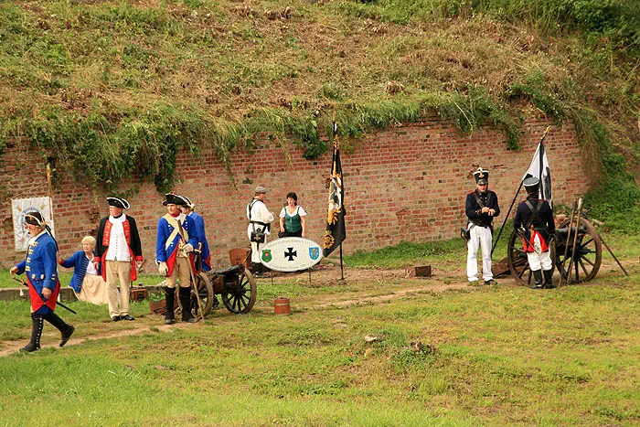
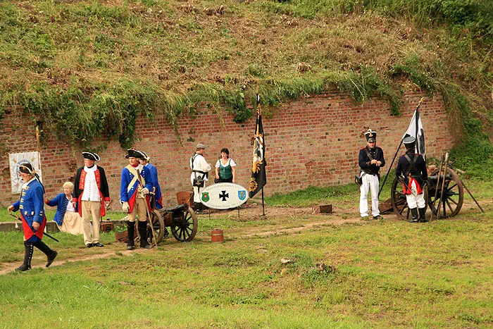
 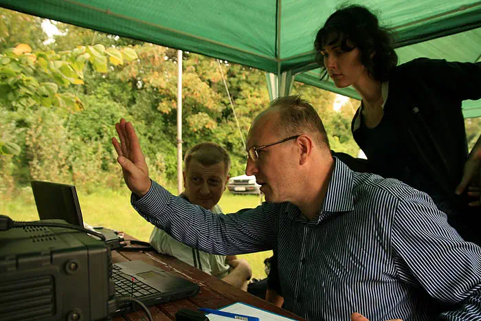
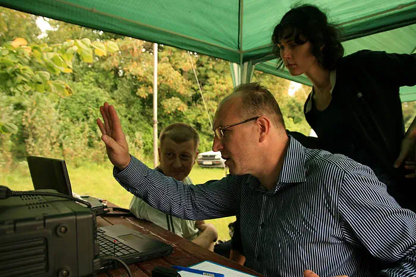


„Kostrzyńskie Pompeje” – ruiny Starego Miasta i Twierdzy Kostrzyn
Historia kostrzyńskiej Starówki jest pasjonująca. Szczególne piętno wywarły nań twierdza oraz król
pruski Fryderyk Wielki. Stare Miasto ze swoim zamkiem, ratuszem, kościołem parafialnym i rynkiem
posiadało niepowtarzalny urok. Wydarzenia z końca II Wojny Światowej spowodowały, że miasto zamarło
na bez mała 50 lat.
Odgruzowane ruiny Starówki oraz pozostałości kostrzyńskiej twierdzy, budowanej w latach 1537-1568 są
najciekawszą atrakcją turystyczną miasta.
"Das Küstriner Pompeji" –Altstadtruinen und Überreste der Festung Küstrin
Die Geschichte der Küstriner Altstadt ist überaus faszinierend. Ihr Gepräge hat sie sowohl der
Festung wie auch dem König Friedrich II. von Preußen zu verdanken.
Der historische Stadtkern mit Schloss, Rathaus, Pfarrkirche und Marktplatz besaß einst einen
geradezu märchenhaften Zauber. Aber infolge der Ereignisse der letzten Wochen des II. Weltkriegs lag
die Altstadt für fast 50 Jahre im Todesschlaf.
Die enttrümmerte Altstadt und die Überreste der Festung Küstrin (erbaut 1537-1568) sind die
Hauptsehenswürdigkeiten der Stadt.

Nasz klub zorganizował w dniach 07-10 sierpnia 2009 duże spotkanie dla sympatyków radia na placu
przed kościołem Templariuszy w Chwarszczanach
Na tą okoliczność pracowała stacja SN0ST.
Marek SP3GVX poopowiadał o swoim wyjeździe na Antarktydę, pracowała stacja radiowa i odbyła się
prezentacja sprzętu KF i UKV wielkiej częstotliwości. Na placu głównym Polskie radio miało koncert
"Lata z Radiem".


{kind=link}
{kind=link}
{kind=link}
{kind=link}